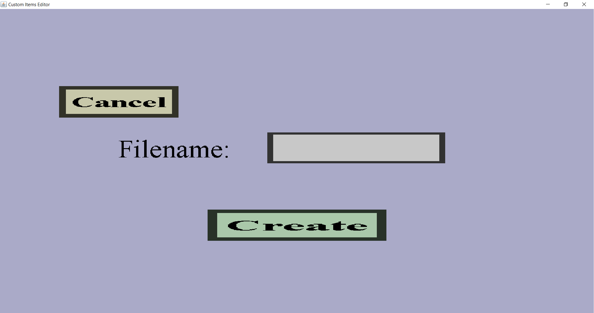

In the item set creation menu, you need to give the item set you're about to make a name. It should look like this:

To type the name, you need to click on that box that is supposed to look like a text edit field on the right of the 'Filename:'. Then it should turn white, which indicates that it's waiting for you to type on your keyboard. As it suggests, the name of your item set will be used in the file name in which it will be stored. The name of the item set is just for you, the players won't see the name when they are playing on your server. (That having said, don't expect the name of your item set to be secret: players might be able to find out if they really know what they are doing.)
After you enter a name, you should click on the 'Create' button. If the name you entered is valid, you will be brought to the item set edit menu where you can start designing your item set. If the name you entered is not valid, you will see a red message at the top of the editor window. If that happens, you should choose another name and click on 'Create' again.